Wszystkie zasiłki rodzica w jednym planie
Zasiłkowy Przewodnik Przyszłego Rodzica: co przysługuje, ile, kiedy i jaki wniosek złożyć – dla obojga rodziców naraz.
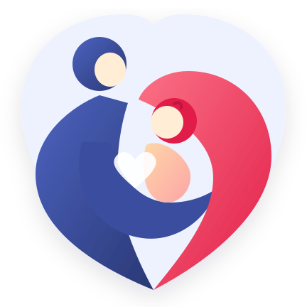
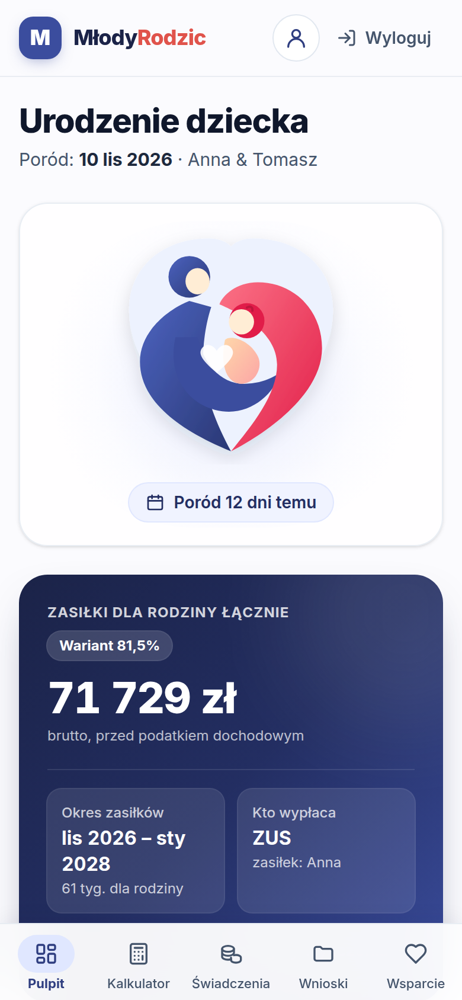
Pięć świadczeń, dwóch płatników, kilka terminów – i żadnej mapy
Podstawa z 12 miesięcy, wariant 100%→70% albo 81,5%, inne zasady na umowie, zleceniu i działalności.
2 wariantyjeden wybór na cały okres urlopówPracodawca, który zgłasza ponad 20 osób, albo ZUS. Od tego zależy, gdzie i jak złożyć wniosek.
>20 osóbpróg z art. 61 ustawy zasiłkowejZgłoszenie urodzenia, wniosek o urlop macierzyński, decyzja o 81,5% – terminy biegną od porodu.
21 dnina wniosek o wariant 81,5%Zaległość w składkach, przerwa w dobrowolnym ubezpieczeniu, umowa kończąca się w ciąży.
1%płacy minimalnej – tyle zaległości wstrzymuje zasiłekJeden plan rodziny, który odpowiada na cztery pytania
- 1Co mi przysługuje?Zasiłek chorobowy w ciąży, macierzyński, ojcowski, rodzicielski, świadczenie rodzicielskie.
- 2Ile i kiedy?Kwoty brutto i okresy dla obojga rodziców na jednej osi czasu.
- 3Co złożyć, komu i do kiedy?Lista wniosków z terminem, adresatem i linkiem do formularza.
- !Na co uważać?Ryzyka utraty zasiłku wykryte z wyprzedzeniem, z przepisem i tym, co zrobić.
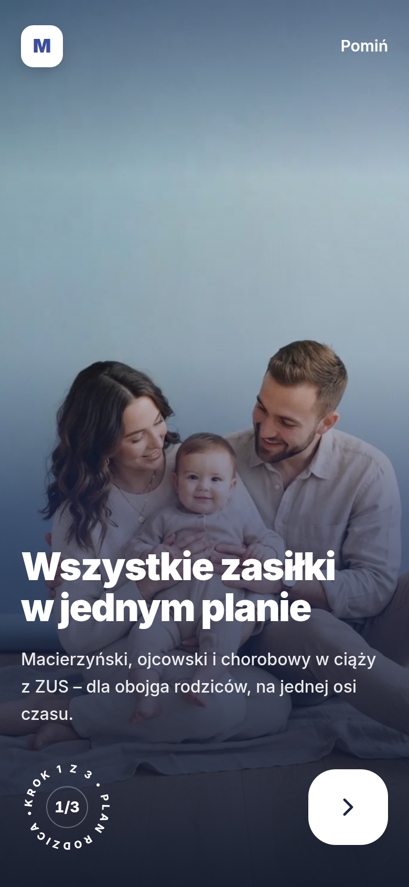
Trzy drogi do planu – od jednego kliknięcia do pełnego przewodnika
- 1mObywatel + dane z eZUSUbezpieczenia, płatnik, 12 miesięcy wynagrodzeń i e-ZLA pobrane automatycznie. Rodzic tylko sprawdza.
- 2Przewodnik w 6 krokachPytania w języku rodzica, zapis na bieżąco, każdy krok z wyjaśnieniem.
- 3Szybkie wyliczenieOkoło minuty, wynik przybliżony – do sprawdzenia, zanim zbierze się dokumenty.
Do testów jury: 8 kont testowych opartych na sprawach przykładowych ZUS. Wybór konta = wczytanie wniosku i jego przeliczenie.
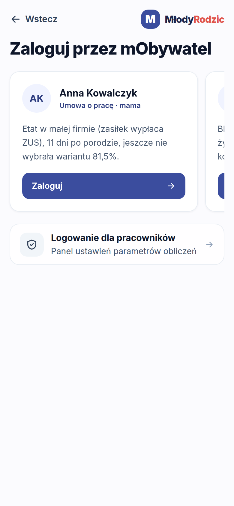
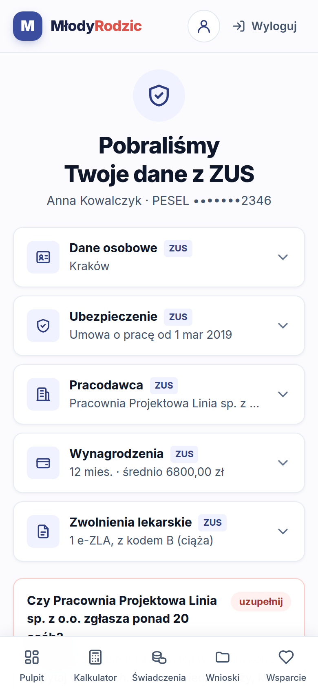
Od razu widać sumę, okres i to, co pilne
- złŁączna kwota dla rodzinyNp. 71 729 zł brutto za 61 tygodni, z wybranym wariantem i informacją, kto wypłaca.
- !Do zrobienia terazPilne sprawy z licznikiem dni i bezpośrednim przejściem do gov.pl albo formularza ZUS.
- §Świadczenia z uzasadnieniemKażde z kwotą, okresem, statusem „przysługuje” i podstawą prawną w szczegółach.
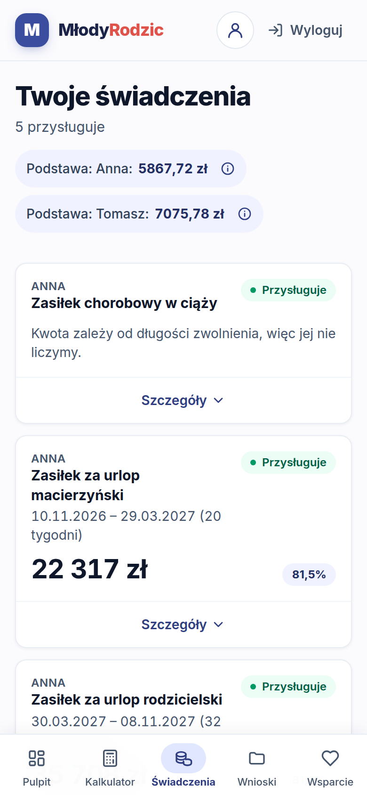
Decyzje rodziny przeliczane od razu
- %100%→70% czy 81,5%?Oba warianty policzone obok siebie, z różnicą w złotych i warunkiem opłacalności.
- ⇄Podział urlopu rodzicielskiegoSuwak między rodzicami, z 9 tygodniami tylko dla drugiego rodzica.
- ◷Ojcowski i praca w czasie urlopuData ojcowskiego, łączenie pracy z urlopem – kwoty i terminy się aktualizują.
- ↦Oś czasu obojga rodzicówKto, jaki urlop i od kiedy – w jednym widoku.
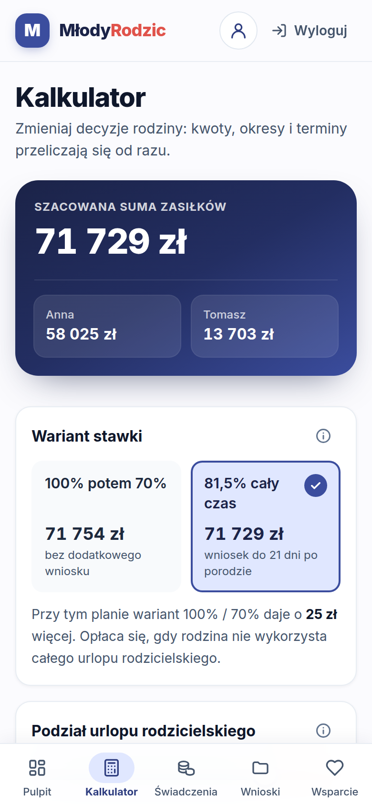
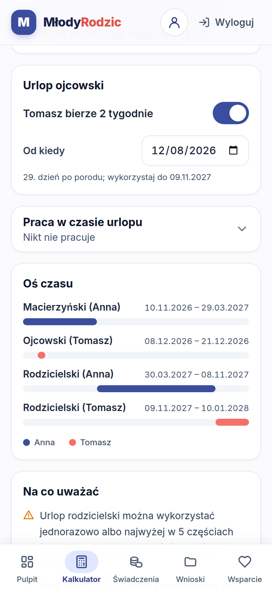
Problem widać, zanim ZUS odmówi
- !Przykład: działalność z zaległościąZaległość 128,50 zł przekracza próg 48,06 zł, więc ZUS wstrzyma zasiłek. Aplikacja podaje datę, do której trzeba spłacić całość.
- §21 reguł z podstawą prawnąZadłużenie składkowe, przerwa w dobrowolnym ubezpieczeniu, umowa kończąca się w ciąży, okres wyczekiwania.
- ✓Od razu następny krokZaświadczenie o stanie rozliczeń do druku i pytanie do ZUS w eZUS.
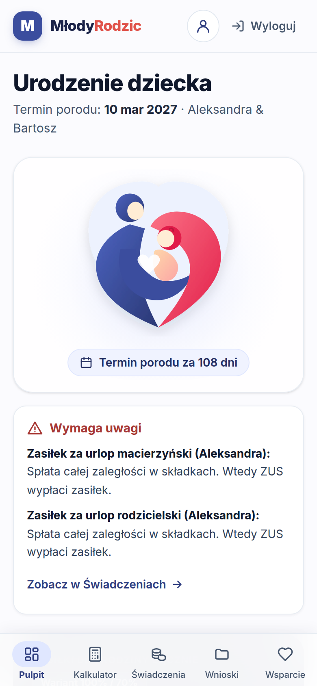
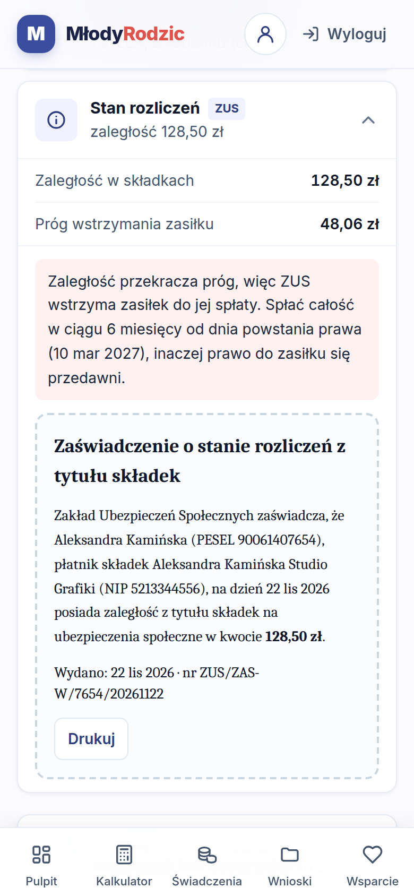
Co złożyć, komu i do kiedy
- ✎Wnioski i terminyHarmonogram spraw obojga rodziców: adresat (pracodawca, ZUS, USC), termin i lista „co przygotować”.
- ↗Prosto do źródełFormularze ZUS (ZAM, Z-3, ZAS-53), gov.pl, Ministerstwo Rodziny i PIP – bez szukania.
- ♡Wsparcie w trudnych sytuacjachPoronienie, wcześniactwo, ciężka choroba lub śmierć dziecka: organizacje i bezpłatne telefony.
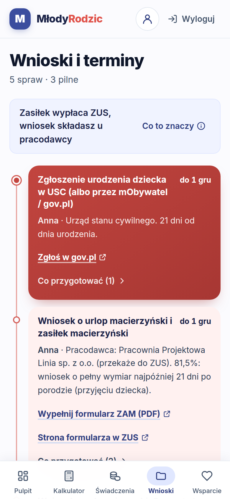
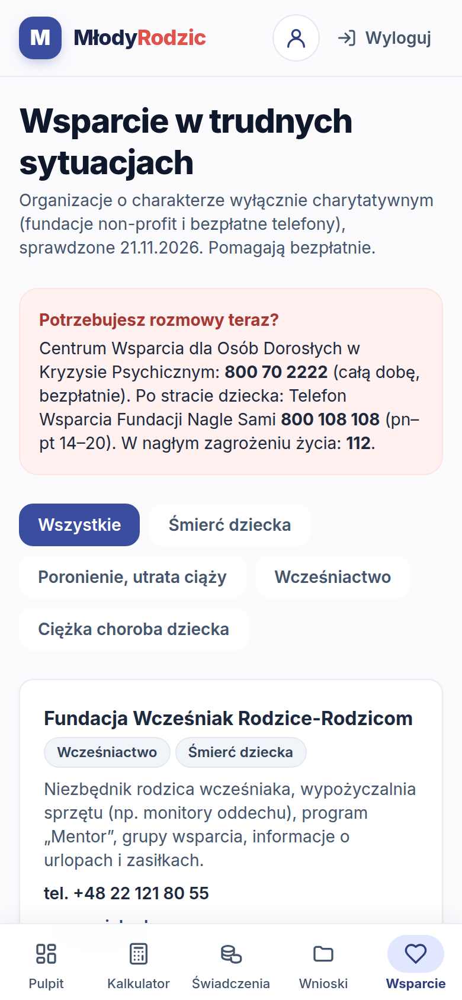
Przepis się zmienia – kod nie musi
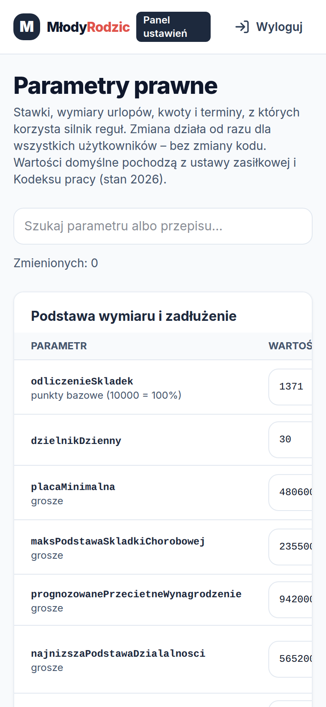
Panel ustawień dla pracownikaGotowe do testów dziś, gotowe do wdrożenia jutro
Droga do wdrożenia
- logowanie mObywatel i dane z PUE/eZUS przez API
- wnioski składane elektronicznie z planu
- parametry utrzymywane przez pracowników ZUS w panelu
Sztuczna inteligencja
Aplikacja nie używa AI – wyniki liczy deterministyczny silnik reguł. Przy tworzeniu pomagały Claude Code (kod, testy) i Google Stitch (makiety, ilustracja).